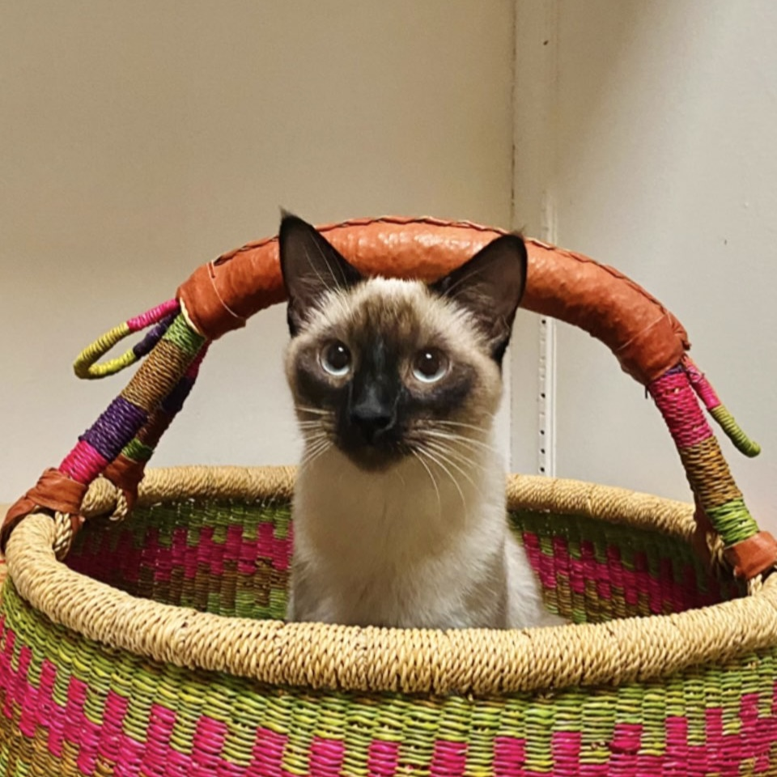

About Me
Download ResumeHello, and thanks for checking out my personal portfolio!
I am originally from Santa Barbara, California although my desire to travel always keeps me moving and exploring new places around the world. Currently, I live in Southern Utah and love to be outdoors doing fun athletic activities whenever I have time. Some of these activities include hiking, biking, trail running, climbing, canyoneering, and more! Besides being outside, I have always had a creative side that includes many hobbies as well. Some of these hobbies that I enjoy are drawing, painting, photography, designing, graphic design / art, pottery, playing guitar, and making music. I actually self-taught myself how to play the guitar and ukulele during the Covid Pandemic and recently got a new electric guitar that I am excited to learn how to play better! Lastly, and most importantly, I am a big time cat lover and have a little Siamese kitty named Mishka. She is the best cat ever :)
I have proficient developer experience working with big-brand clients such as Michael Stars, Faherty, Vaay, and This-Place, utilizing React, Redux, Javascript, Shopify’s liquid templating language, Vue.js, HTML, CSS, SASS and Ruby on Rails. I love learning about new technologies and challenging myself to think logically, methodically, and creatively. When building an idea, a user’s experience is very important to me, so I strive to craft an interface that is innovative, visually appealing, and intuitive for everyone.